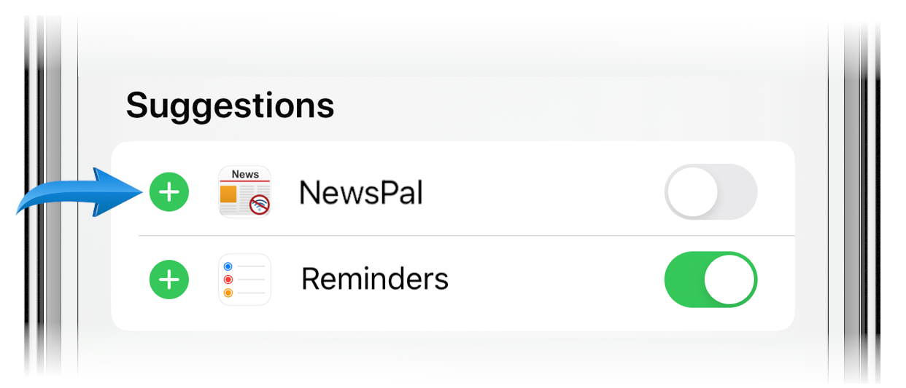

-
Tap the Share icon on the bottom of your screen.
-
Swipe the colored app icons, and tap More.
-
Tap Edit, then the plus sign next to OffReader, and finally tap Done.

-
Now, you can tap the Pocket icon to save, from Safari or any app using the Share button.